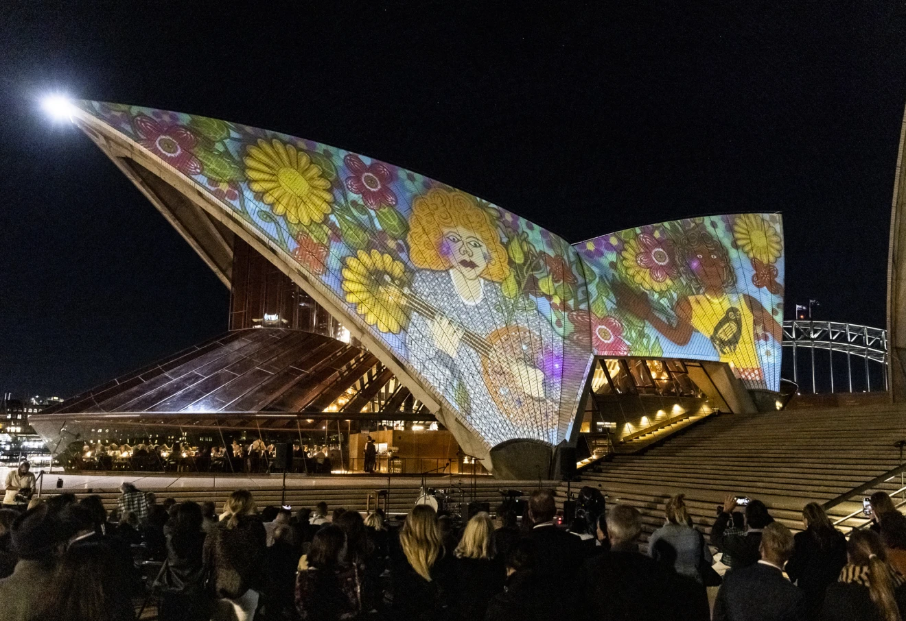
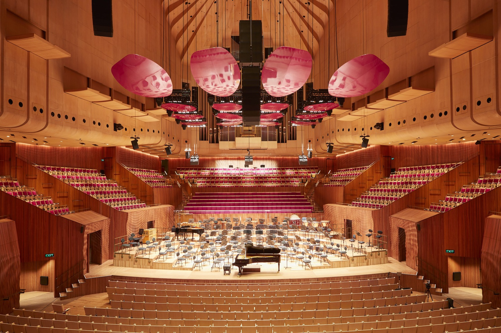
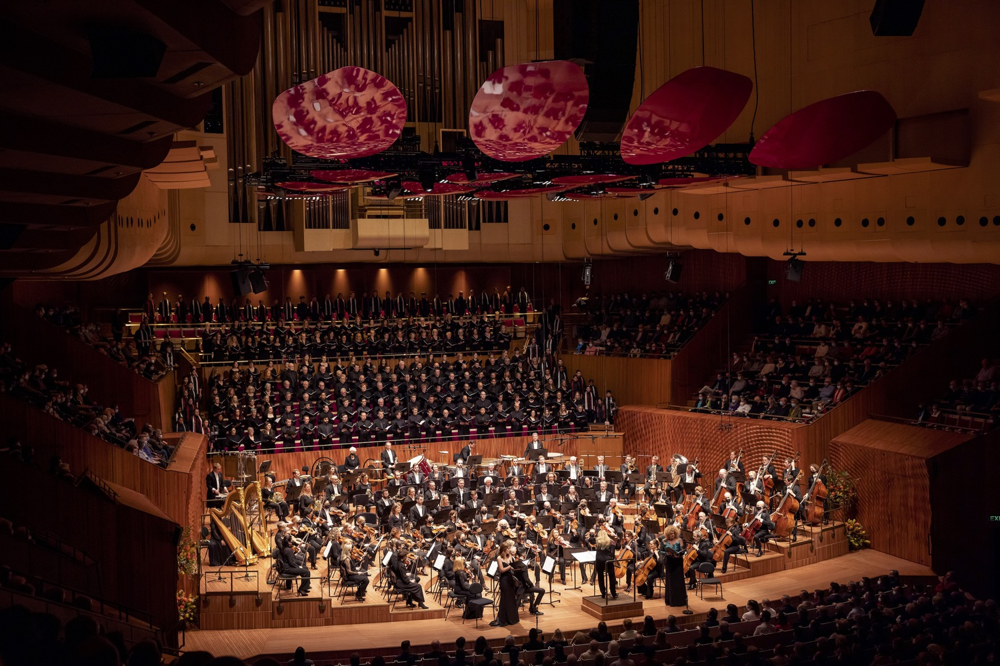

From the wild and right into modernity. The Sydney Opera House located in the Bennelong Point in Sydney Harbour, Australia is one of the most notable landmarks of the world. It hosts thousands of performances annually, ranging from opera and ballet to concerts. Not to mention, its beautiful architecture.
© Sydney Build Expo

© Sydney Tickets |

© Brook Mitchell/Getty Images |
|

© Martin Mischkulnig |

© Daniel Boud |